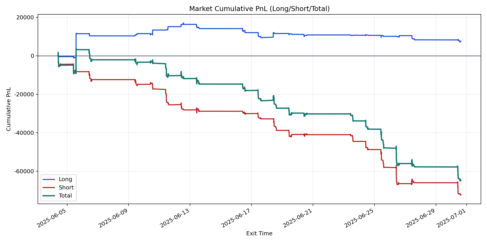
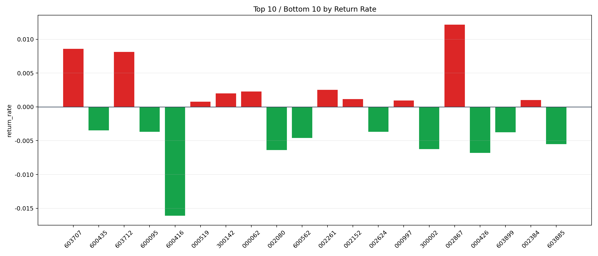

| repo_root | /home/haoranyou/data/output/dynamic_AUM_TAKER_index500 |
|---|---|
| period_months | 1 |
| period_label | 2025-06-04_to_2025-06-30 |
| start_time | 2025-06-04 09:52:57 |
| end_time | 2025-06-30 14:43:07 |
| n_trades | 3531 |
| n_symbols | 61 |
| total_pnl | -64970.79860000056 |
| long_total_pnl | 7528.53050000028 |
| short_total_pnl | -72499.32910000083 |
| total_entry_notional | 62456514.0 |
| long_entry_notional | 14541258.0 |
| short_entry_notional | 47915256.0 |
| total_return_rate | -0.0010402565631504916 |
| long_return_rate | 0.0005177358451380396 |
| short_return_rate | -0.0015130740217687835 |
| top_symbols_by_return | ["002867", "603707", "603712", "002261", "000062", "300142", "002152", "002384", "000997", "000519"] |
| bottom_symbols_by_return | ["600416", "000426", "002080", "300002", "603885", "600562", "603899", "600095", "002624", "600435"] |

